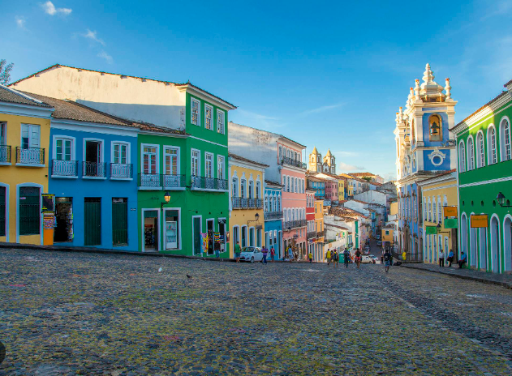

Minhas Viajens





Bem-vindo ao códigos e destinos. Este é o meu espaço pessoal para compartilhar duas das minhas maiores paixões: programação e viagens. Acredito que a tecnologia e a exploração do mundo podem andar lado a lado, oferecendo uma vida mais rica e cheia de aprendizados.
Download CVÉ um hobby que conecta o indivíduo com a natureza, proporcionando um espaço verde e promovendo o bem-estar mental e cuidar das plantas.
Mais InformaçãoEstimula a mente, expande o conhecimento e oferece uma fuga para histórias imaginativas, sendo uma ótima forma de relaxar e aprender.
Mais InformaçãoPermite capturar momentos especiais e explorar a criatividade, oferecendo uma nova perspectiva sobre o mundo e preservando memórias.
Mais Informação